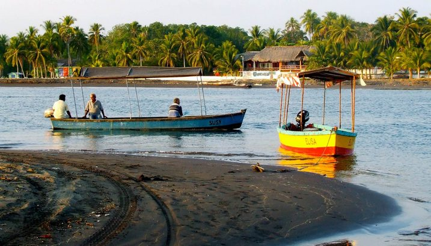
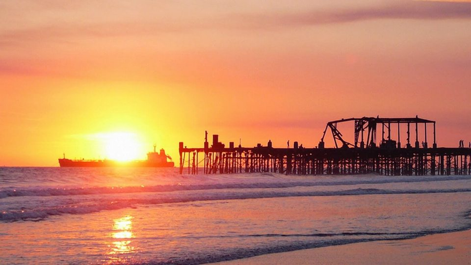
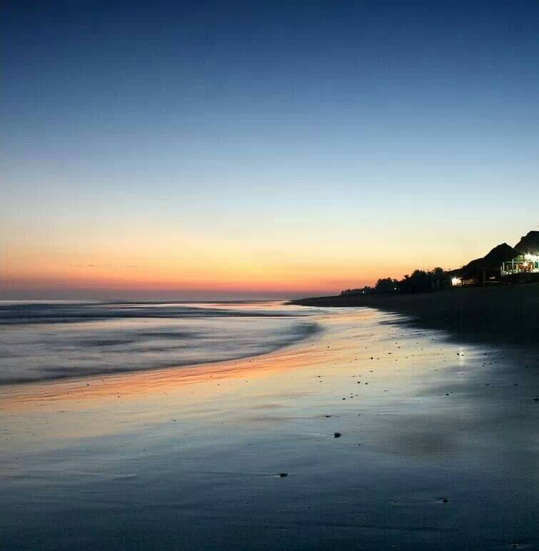
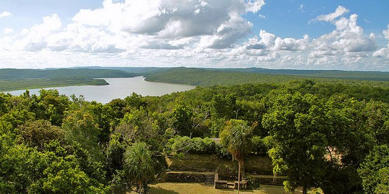
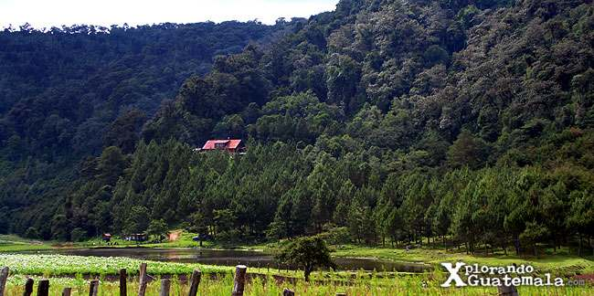

Puerto Iztapa
El primer puerto del pacífico de Guatemala y practica surf y la pesca.

Puerto de San Jose
Es uno de los mejores lugares del mundo para la realizar la pesca.


Playa de Champerico
Donde podras practicar surfing, avistar ballenas y la pesca deportiva.

Naachtun Dos Lagunas
Se puede practicar la pesca deportiva, ademas de practicar ecoturismo.

Laguna de Chichoy
Aldea Agua Escondida, se encuentra una laguna y tesoro ecoturistico para pescar.